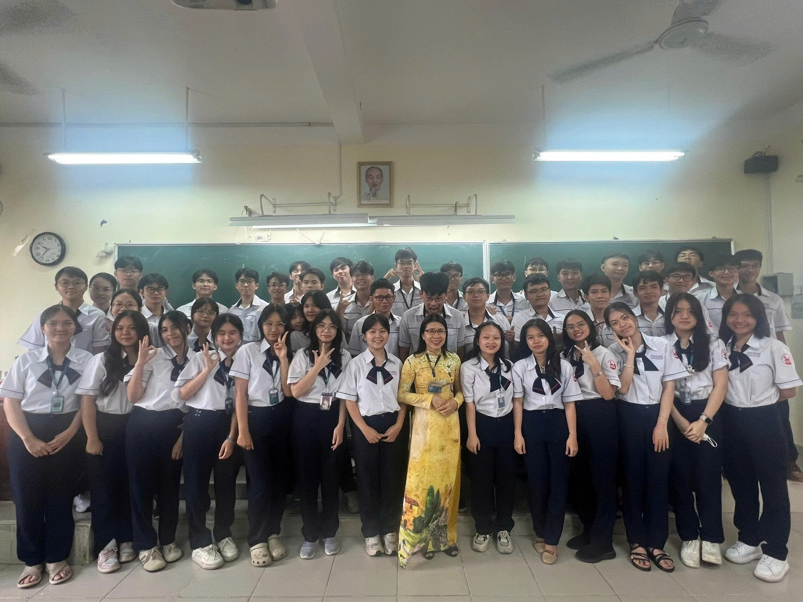
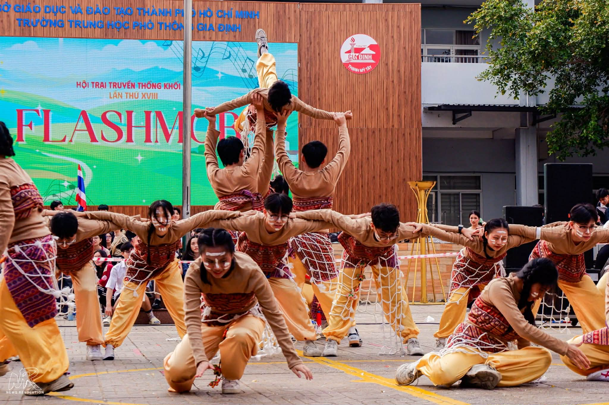

3. Trò chơi tập thể
Những trò chơi vui nhộn giúp các bạn học sinh gắn kết, tạo nên những kỉ niệm khó quên.
Các trò chơi bao gồm:
- Kéo co
- Nhảy bao bố
- Đuổi hình bắt chữ

Hoạt động chụp ảnh kỉ yếu giúp lưu giữ những khoảnh khắc đẹp nhất của tuổi học trò trước khi chia tay mái trường THPT.
Các tiết mục văn nghệ đặc sắc được chuẩn bị công phu để gửi tặng thầy cô và cha mẹ như một lời cảm ơn chân thành.
Những trò chơi vui nhộn giúp các bạn học sinh gắn kết, tạo nên những kỉ niệm khó quên.
| Thời gian | Hoạt động |
|---|---|
| 07:30 | Khai mạc |
| 08:00 | Văn nghệ tri ân |
| 09:30 | Trò chơi tập thể |
| 10:30 | Chụp ảnh kỉ yếu |